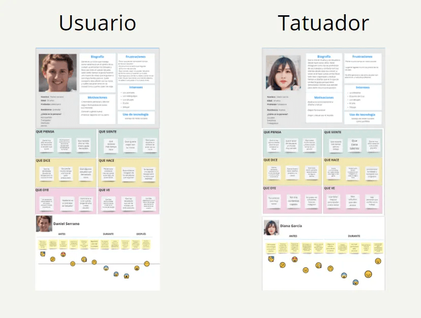

THE CHALLENGE
The process of finding a tattoo artist and style is slow, fragmented, and disorganized. The goal was to create an app that connects users and tattoo artists, centralizing the search for styles, artists, budgets, and reservations in one place.

THE PROCESS
I conducted surveys (+100 responses) and interviews with users and tattoo artists. Insights revealed that technique and style are most important, and current booking systems are chaotic.
I created User Personas, Journey Maps, and a MoSCoW matrix to define features.
FINAL SCREENS
High-fidelity screens including style gallery, artist list by location, artist profile with designs and booking, and user profile.